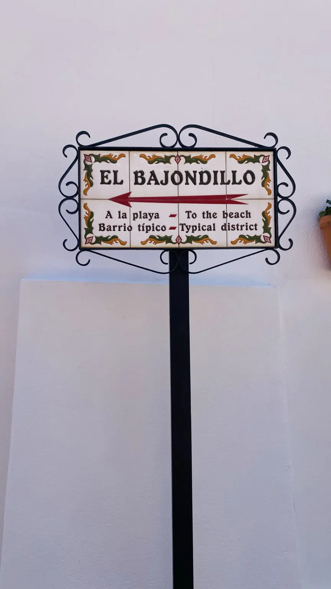

Desde el aeropuerto
La línea C1 de Cercanías enlaza el aeropuerto de Málaga con Torremolinos y otras localidades.
Consulta Renfe ↗Tu guía libre por la Costa del Sol
Playas, cultura, noches memorables y la ciudad real. Para quienes vienen y quienes se quedan.
No necesitas un itinerario perfecto. Sigue tu instinto y descubre tu Torremolinos.
Empezamos con barrios y lugares reales. Los locales comerciales y los eventos necesitan verificación individual antes de publicarse.
La cultura LGBTQ+ no es una nota al pie. La Nogalera y el histórico Pasaje Begoña cuentan historias reales de convivencia, memoria y libertad.
Fotografías originales de la costa, las palmeras y los rincones cotidianos de Torremolinos.



Fotografías del autor, cedidas para esta publicación. Todos los derechos reservados.
Un diario visual de playas, paseos, barrios y detalles. Fotografías del archivo y piezas ilustrativas señaladas con transparencia.
Explorar la Gallery ↗Un paisaje de mar, calles y noches contadas con música. Escucha un fragmento de “Next Stop: Torremolinos”, una creación de LUNE_X con dirección artística humana y producción asistida por IA.
La reproducción se inicia al pulsar Play · Muestra oficial de LUNE_X © Archivo fotográfico TORREMOLINOS · LUNE_X
© Archivo fotográfico TORREMOLINOS · LUNE_XPersonas, barrios, memoria y cultura más allá de la postal.
 CIUDAD / IDENTIDAD© Archivo TORREMOLINOS · Derechos reservados
CIUDAD / IDENTIDAD© Archivo TORREMOLINOS · Derechos reservadosUna historia sobre el mar, la libertad y una ciudad que va más allá de la playa.
Leer en español ↗ LGBTQ+ / CULTURATyk · CC BY-SA 3.0 · 2010
LGBTQ+ / CULTURATyk · CC BY-SA 3.0 · 2010La vida cotidiana, la música y la memoria LGBTQ+ de un lugar de encuentro.
Leer en español ↗ HISTORIA / DERECHOSBernardaAlba · CC0 · 2024
HISTORIA / DERECHOSBernardaAlba · CC0 · 2024Los hechos documentados que hicieron de este lugar un símbolo de memoria.
Leer en español ↗
La Romería, la Feria y una tradición que merece ser contada con rigor
Imagen de ambiente; no muestra la fiesta · Fotografía original autorizadaLeer la historia en español ↗Artículos originales en español con fuentes identificadas. Traducciones en preparación y revisión.
Cultura, actividades y encuentros con fuentes oficiales. Descubre una selección de próximos eventos con fecha de comprobación y acceso al programa completo.
Ver eventos y agenda ↗Selección editorial consultada el 2 de noviembre de 2026. Comprueba los detalles con los organizadores.© Archivo fotográfico TORREMOLINOSTres paradas inspiradoras para caminar sin prisa. Comprueba los horarios, accesos y trayectos antes de salir.
Elige un ambiente y prepararemos un recorrido orientativo.
Ruta sugerida, no representa tiempos ni disponibilidad en vivo.
Información que conviene tener a mano, respaldada por fuentes oficiales. Los servicios pueden cambiar.
La línea C1 de Cercanías enlaza el aeropuerto de Málaga con Torremolinos y otras localidades.
Consulta Renfe ↗En España, el 112 es el número gratuito de emergencias. Solo para situaciones reales.
Llamar al 112Del centro a la playa hay desniveles y escaleras. Consulta los accesos disponibles antes de bajar.
Turismo oficial ↗Activa el mapa cuando lo necesites. Usamos OpenStreetMap, sin rastrear tu ubicación desde esta app.
Al activarlo se cargarán contenidos de OpenStreetMap.
Esta guía independiente quiere sumar voces locales, información comprobada y recomendaciones transparentes. Los acuerdos comerciales nunca se presentarán como reseñas imparciales.